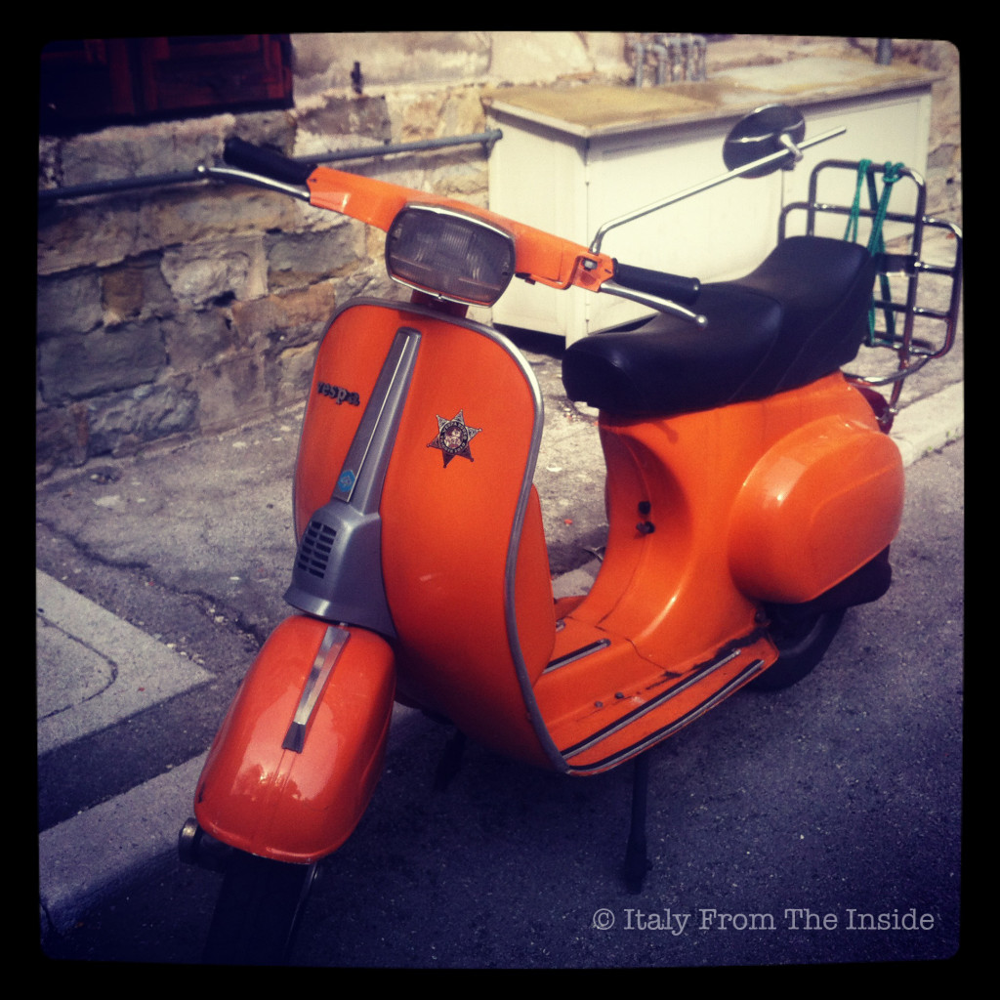

You may already know that I have a passion for old Fiat 500s, but when it comes to the due ruote (two wheels) the old Vespa (in English Wasp) is for me and will always be the one and only. I have many memories linked to it, even though I never, ever drove it. Can you believe it? An Italian who loves the Vespa and never drove it? Now I do feel down. I need a spoon of Nutella to cheer me up...